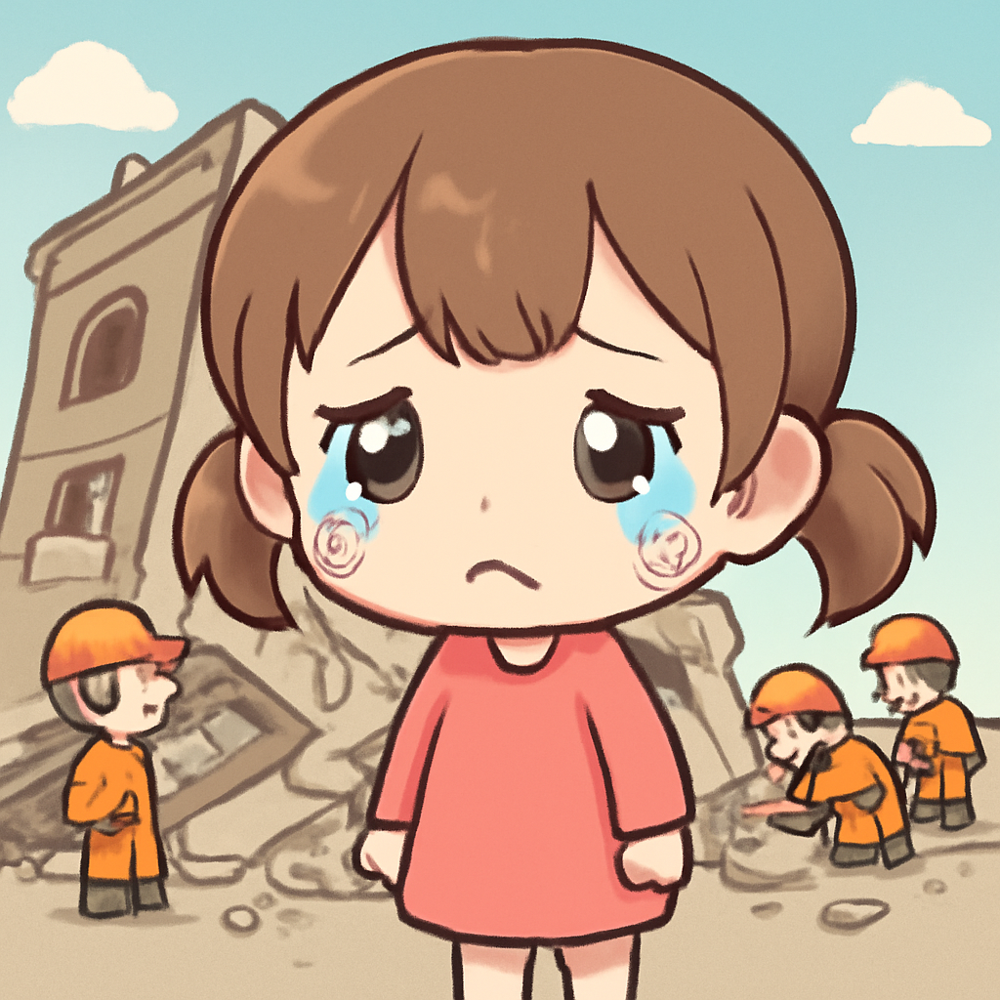
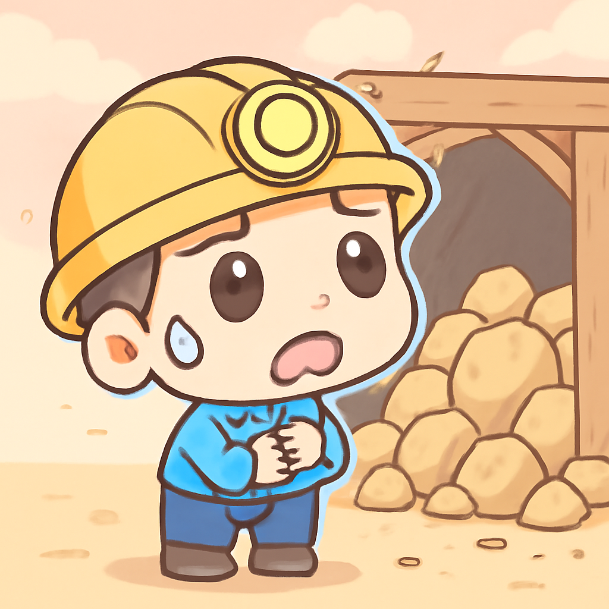

其一 · 加沙 · 建築物倒塌造成21人死亡
加沙一棟建築倒塌，21人遇難，包含8名兒童。

在加沙城，日前一棟六層樓的建築因戰爭損毀而倒塌，造成21人死亡，其中包括8名兒童。這棟建築曾經是10個家庭的家，悲劇的背後是持續的衝突與危機，讓人心痛不已。這事件再次凸顯了當地人們面臨的艱難生活，未來是否能有和平之路？
🔗 原始新聞 ↗
2026-09-17 · 以古觀今，以笑抗愁
加沙一棟建築倒塌，21人遇難，包含8名兒童。

在加沙城，日前一棟六層樓的建築因戰爭損毀而倒塌，造成21人死亡，其中包括8名兒童。這棟建築曾經是10個家庭的家，悲劇的背後是持續的衝突與危機，讓人心痛不已。這事件再次凸顯了當地人們面臨的艱難生活，未來是否能有和平之路？
🔗 原始新聞 ↗
美國聯準會宣布升息，市場反應不一。
在華府，聯準會最近決定升息0.25%，這是三年來的首次加息，儘管特朗普總統強烈反對，呼籲降息。這次升息可能會影響貸款利率，讓借錢的人感到一陣心痛，不過，對於存款的人來說，終於可以期待一些利息了！
🔗 原始新聞 ↗
土耳其政府展開行動，打壓L.G.B.T.Q.社群。
在土耳其，政府最近展開了一場針對L.G.B.T.Q.社群的大規模打壓行動，稱為保護家庭的努力，但人權組織卻批評這是對L.G.B.T.Q.人士的犯罪化行為。這一波行動讓不少人感到憂心，政治情勢似乎越來越緊張，未來的自由與權益又該如何保障？
🔗 原始新聞 ↗
蘇丹一座金礦倒塌，至少70人喪生。

在蘇丹，日前一座金礦發生倒塌事故，造成至少70人遇難，還有許多人失蹤。救援團隊表示，由於缺乏專業設備，救援難度極大，讓人無比心痛。這場事故再一次提醒我們，金礦開採的危險與人命的脆弱，真是得不償失。
🔗 原始新聞 ↗
歐盟首腦支持加拿大成為準會員，尋求更緊密聯繫。
最近，加拿大尋求與歐盟建立更緊密的關係，歐盟首腦也支持其成為準會員，這在美國與特朗普總統的關係緊張之際顯得格外重要。這個動向可能為加拿大帶來新的經濟機遇，也讓人不禁想，是否會引發其他國家的效仿呢？
🔗 原始新聞 ↗